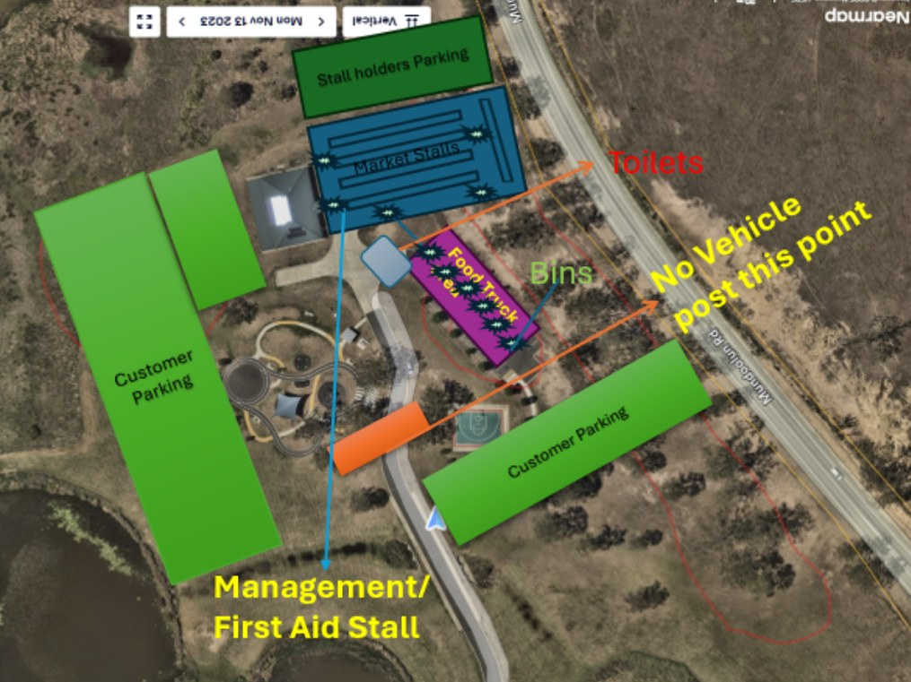

Everything you need to know before heading to Mundoolun Park — directions, parking, what to bring and the day-to-day details.
Mundoolun Park, Mundoolun QLD 4285 — in Logan City, on the edge of the Scenic Rim.
First Sunday of every month, 7:00am – 12:00pm. Launching 5 July 2026.
Free on-site parking with accessible bays near the main gate. Arrive early on busy market days.
Accessible parking near the main gate, generous space between stalls, and accessible toilets on site. Please note the market is held on a natural grassed park, so the ground is uneven and sloping in places.
Well-behaved dogs welcome on a lead. Water bowls dotted around the site.
Customer parking, market stalls, food trucks, toilets and the first aid stall — here's how it all sits on the day.

Indicative layout — exact placement may vary slightly market to market.
A few small things make for a much better market morning.
Reusable shopping bag or a sturdy basket — produce, plants and pottery all want to come home with you.
Most stalls take card, but cash helps the smaller stalls (and avoids surcharges on a $4 coffee).
Mornings can warm up fast in Queensland. Sun-smart pays off, especially in spring and summer.
Every first Sunday of the month, 7:00am – 12:00pm. Our launch market is Sunday 5 July 2026 — see the full 2026 schedule on the Market Days page.
Mundoolun, QLD 4285, on the edge of Logan City just inside the Scenic Rim. About 50 minutes from Brisbane CBD, 35 minutes from the Gold Coast and a short drive from Beaudesert, Jimboomba and Tamborine.
Yes — on-site parking is free, with accessible bays near the main gate. We recommend arriving before 9:00am on busy market days.
Yes — friendly dogs on a lead are very welcome. Please bring poo bags and be mindful around food stalls.
We have accessible parking near the main entrance, generous space between stalls, and accessible toilets on site. Please note the market is held on a natural grassed park, so the ground is uneven and sloping in places and can be soft after rain — visitors with mobility needs may like to plan ahead.
Most stallholders take card payments, but we recommend bringing some cash for smaller purchases. The nearest ATM is in the Mundoolun/Tamborine area.
Absolutely — we'll have a curated selection of food trucks, a coffee cart and bakers each market. See Market Days for what's coming up.
We run rain, hail or shine, but in the rare case of severe weather we may postpone. The call is made by 4:00pm the day before — check our Facebook, Instagram or newsletter for updates.
Please do — markets are very much a family morning out. Live music, a kids' craft tent and plenty of room to run around.
Wonderful — head to the Become a Stallholder page for full info and the enquiry form.